TLS-CERTIFICATE Setup
Prerequesite : IBM Cloud Account
IBM Cloud Components needed
The project needs to have a secure website based on TLS encryption, hence https protocol is used, this latter needs a valid and up-to-date certificate.
- IBM Certificate Manager is used to store and to manage the certificate
- IBM Certificate Manager check expiration date and if needed call a webhook Function Service to renew the certificate
- A certificate is generated for a domain name, this one is handled by IBM Cloud Internet Service, the domain registrar is handle by IBM Cloud Domain Name Service.
IBM Cloud Domain Name Service
You may register a new domain here.
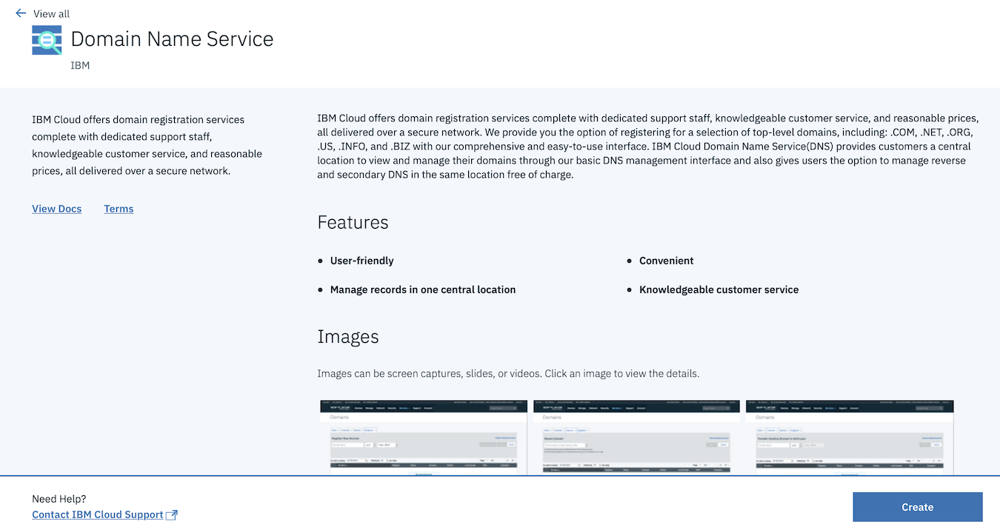
Click on CREATE.
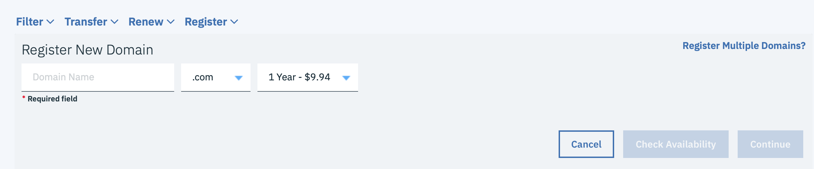 Provide a domain name, the price may change depending on the extension (.com, .net, .org, ...) and the number of years chosen.
You may click on Check Availability to check whether or not the domain name provided is available.
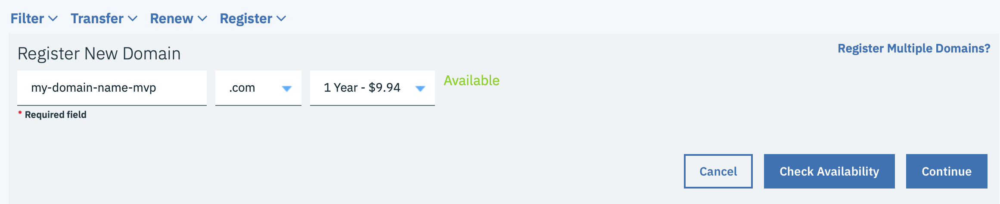
You may proceed by clicking on Continue if your domain name is available
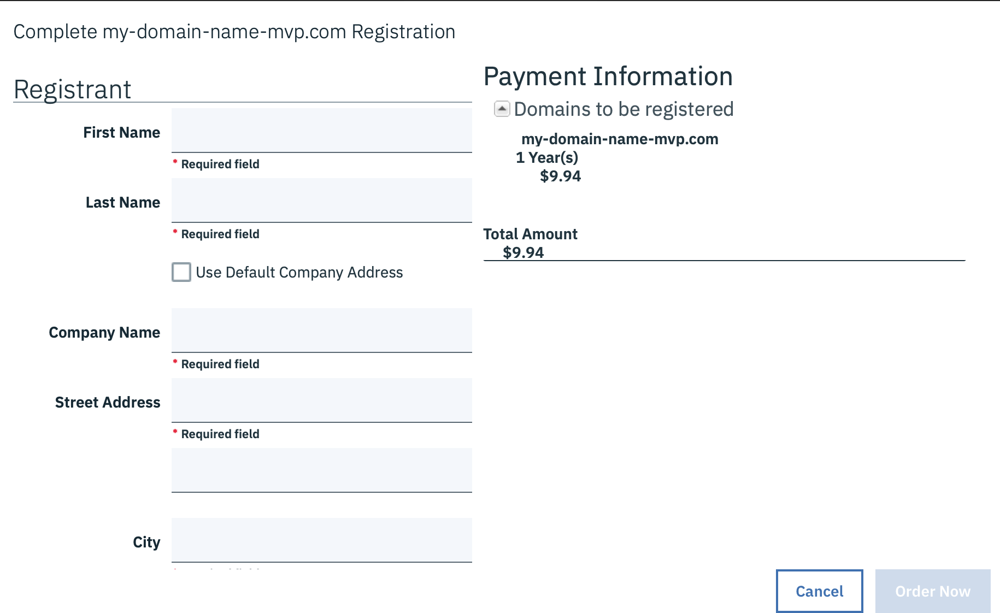 Fill up the form and take care about the email address which will be used to validate your purchase. Click on Order Now to validate the process.
After clicking on the link in the mail sent to your mailbox, you should have valid domain name such as follows after a few minutes :

IBM Cloud Internet Service (CIS)
You may create an IBM CIS instance here.
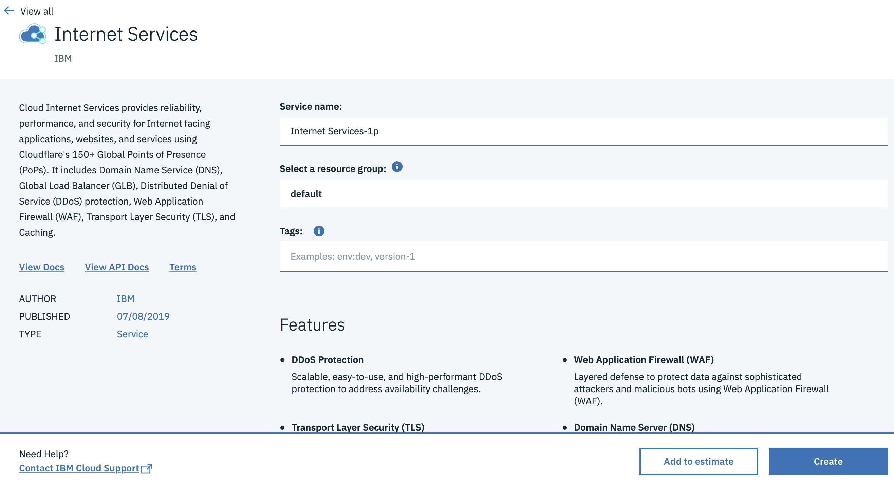 Click on CREATE.
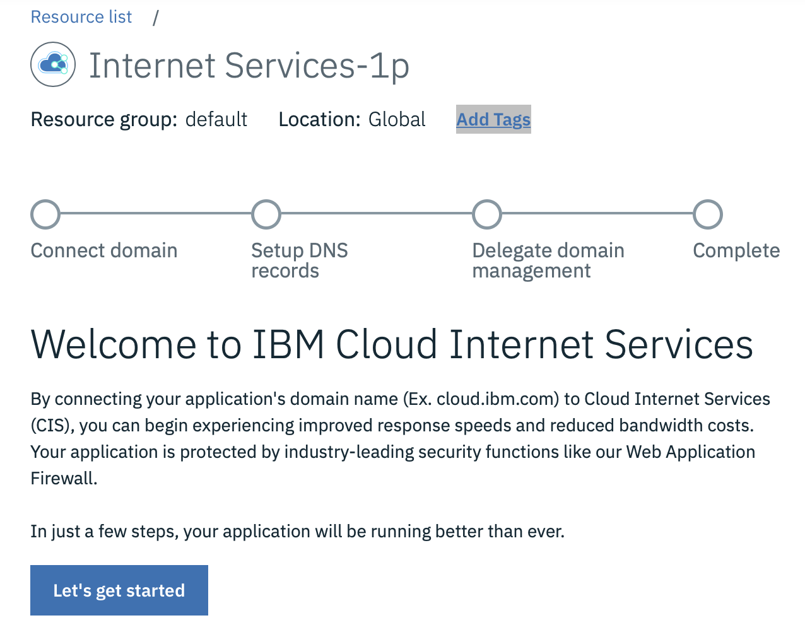 Click on Let's get started.
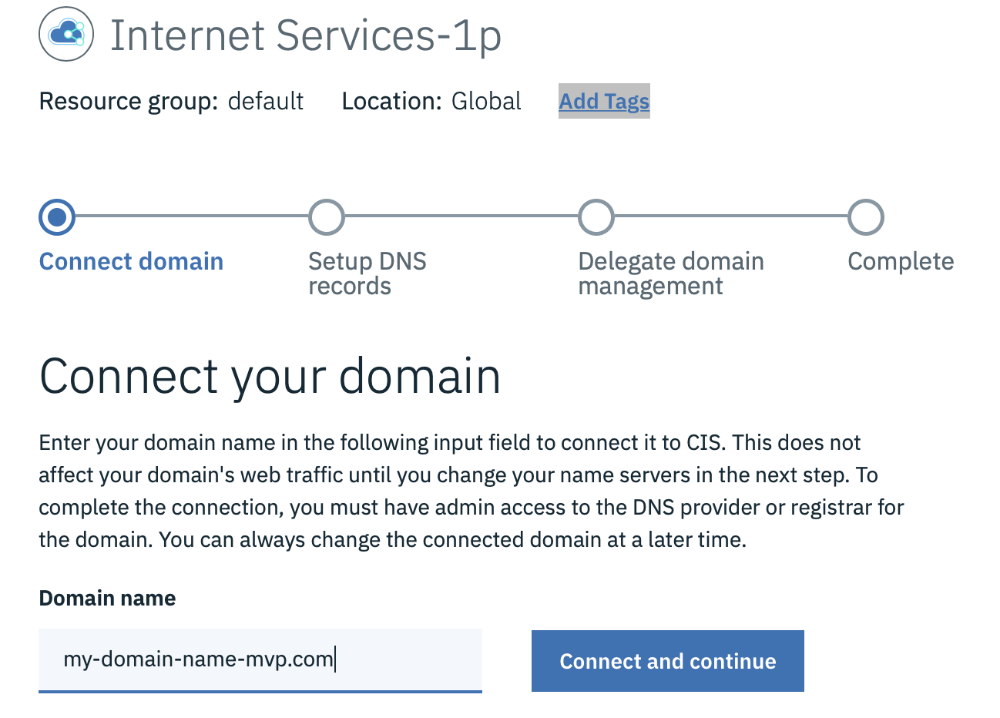 Provided the domain name you created on the previous stage and Click on Connect and continue.
The system will automatically detect the NameServers attached by default (your registrar setup) to your domain, and proposed a list of CIS NameServers to replace, for instance :
ns1.softlayer.com -> ns015.name.cloud.ibm.com
ns2.softlayer.com -> ns016.name.cloud.ibm.com
You need to go back your Domain Registration sub-menu from the Classic Infrastructure menu 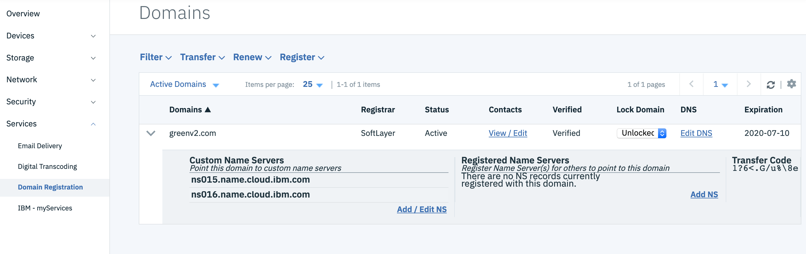 Click on Add /Edit NS link of your domain and change the list of NameServers accordingly to the CIS demands.
After a few minutes, you CIS instance will integrate your domain (Active).
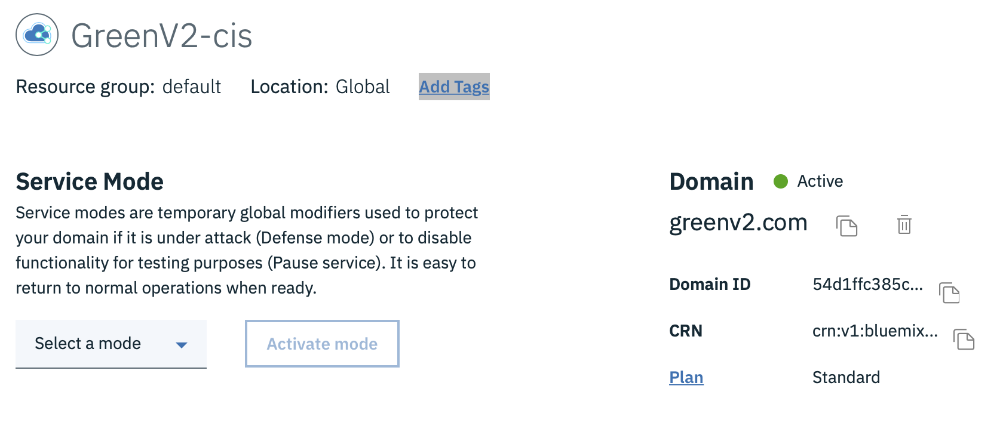
You need to redirect a subdomain such as www.greenv2.com to your Ingress Public IP address, create an 'A' entry just as shown below. 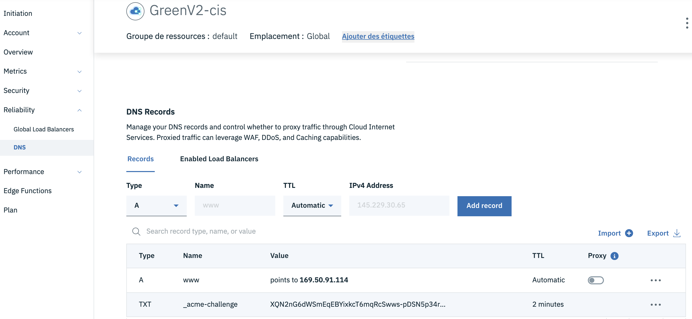
Tick on proxy just as shown below to benefit from IBM CIS caching 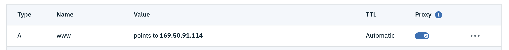
IBM Cloud Function
IBM Cloud Certificate Manager needs a webhook to call on an event such as certificate expiration or certification renewal. This is done by calling a function, fortunately the IBM documentation points out a github link which shows a predefined piece of code in javascript to implement the integration between IBM Cloud Certificate Manager and IBM Cloud Function. The code used for greenv2 project is here.
Here is a few screenshot that is not presented in the link when configuring the function especially regarding the parameters.
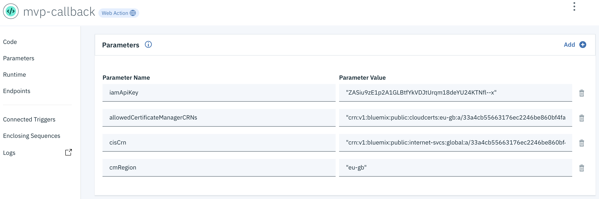
iamApiKey
The easiest way to have this one is to go the Access(IAM) menu
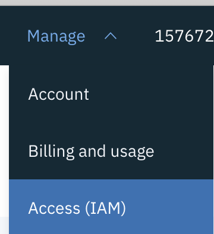
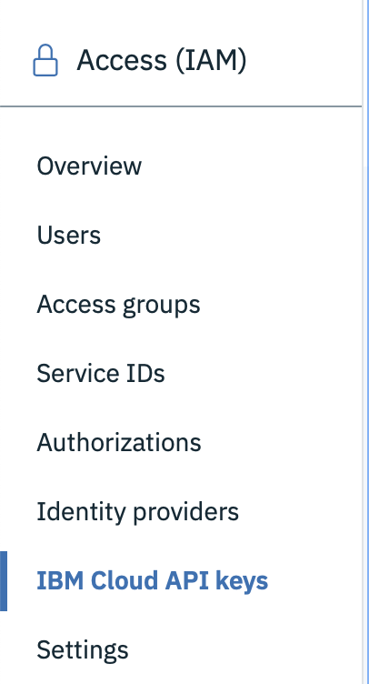 And click on IBM Cloud API keys and then Create an IBM Cloud API key
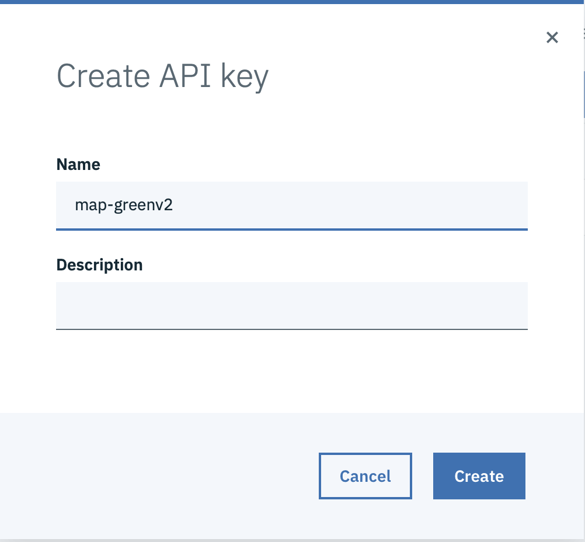
Provide a name an click on Create
You will be given a one-time-only view of the key
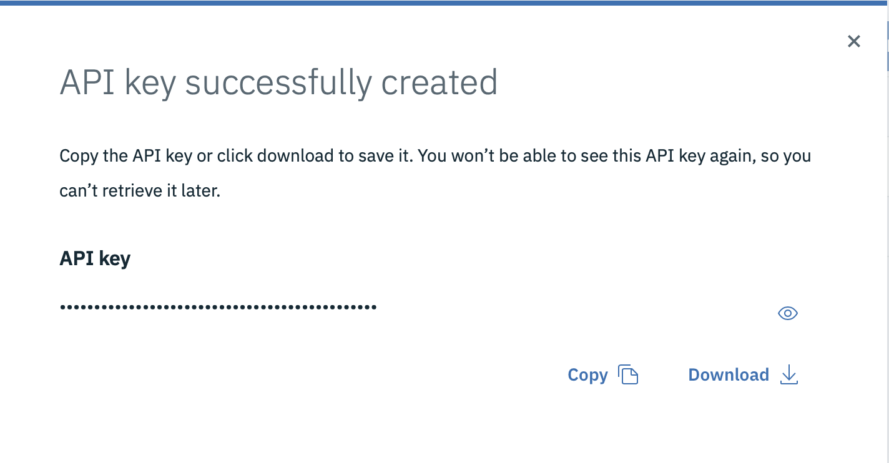
Copy and paste it to the iamApiKey parameter of the function. I might download it to a file to have a backup of the key somewhere else. IBM Cloud will never show that key again after closing this window.
allowedCertificateManagerCRNs
Actually, we skipped this one by commenting the first check in the main function.
cisCrn
This parameter may be retrieved in the overview of your CIS instance.
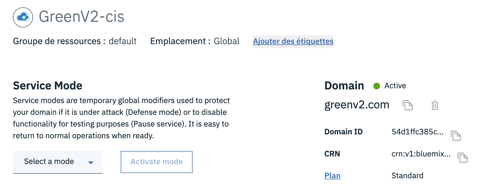
cmRegion
This parameter is used to determine the Region endpoint of your CIS.
It should be :
- eu-gb for London
- eu-de for Francfort
...
IBM Cloud Certificate Manager
Create your IBM Cloud Certificate Manager instance here.
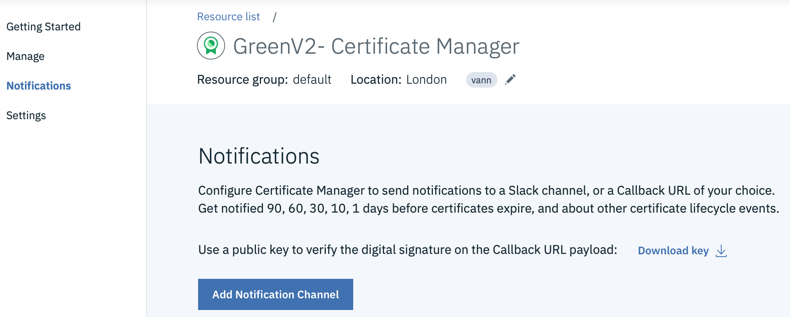 Go to Notifications and Click on Add Notification Channel.
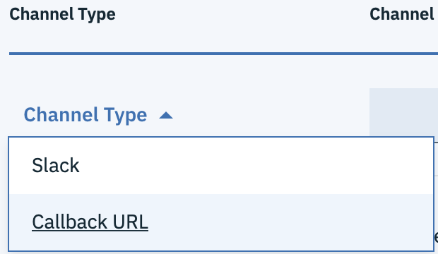 Select Callback URL and paste to the Channel Endpoint the URL pasted from the function created (see below) and click on Save.
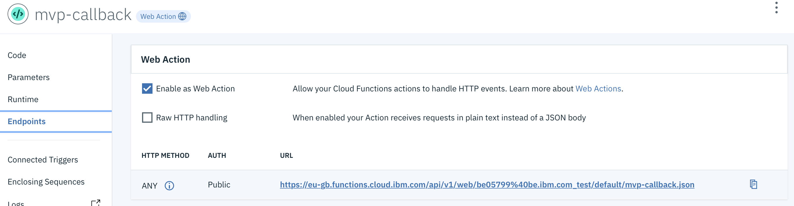
You may click on Test connection to check if your URL is correct.
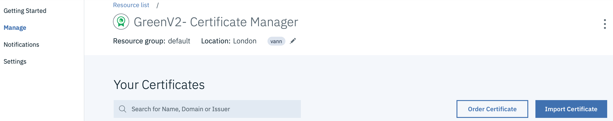
Then go to Manage menu and click on Order Certificate
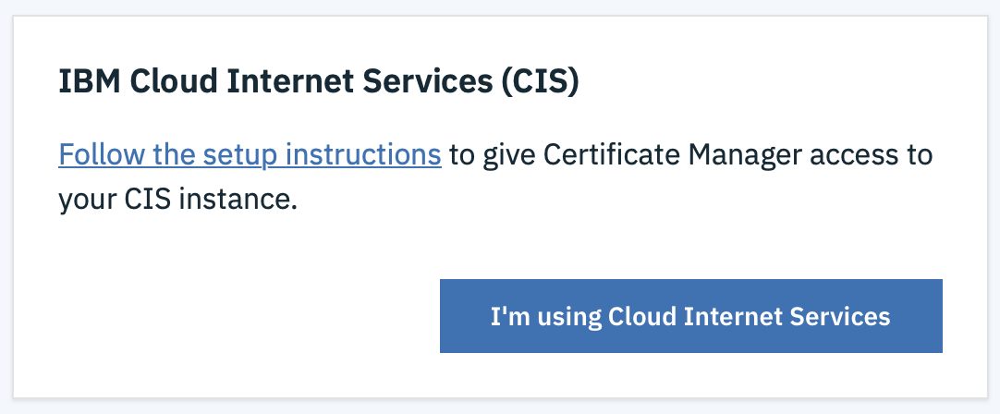 Click on I'm using Cloud Internet Services
Then, give it a name and choose the CIS instance and choose Wildcard certificate 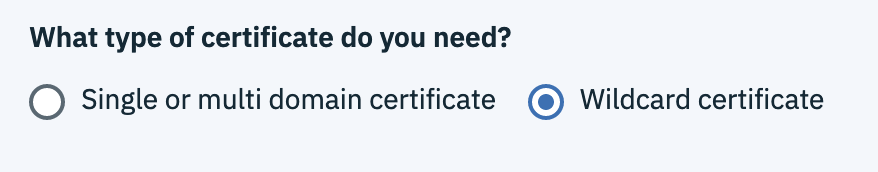 This will enable the certificate for all subdomain *.yourdomain.com.
Click on Order.
After a few seconds, you should have a valid certificate for 90 days. 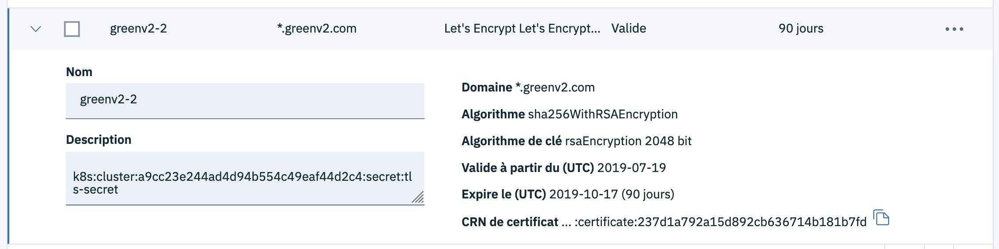